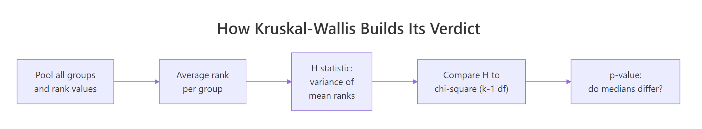
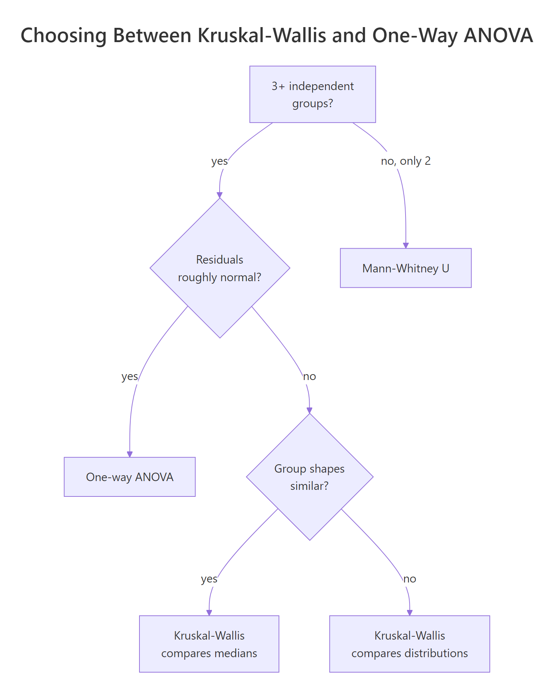
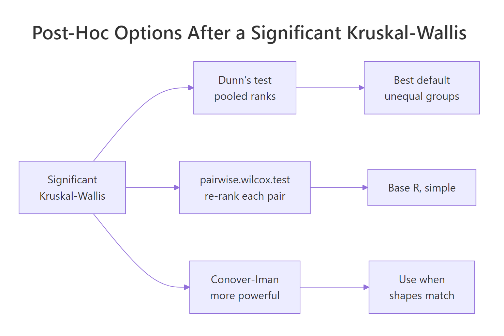

Kruskal-Wallis Test in R: k-Sample Nonparametric ANOVA + Post-Hoc
The Kruskal-Wallis test is the rank-based, nonparametric counterpart to one-way ANOVA. In R, kruskal.test(y ~ group) checks whether 3 or more independent groups come from the same distribution without requiring normality.
How do you run a Kruskal-Wallis test in R?
Suppose you grew plants under three conditions and want to know whether the conditions matter. ANOVA wants normal residuals. Your sample is small and skewed, so the t-distribution feels shaky. The Kruskal-Wallis test ranks every observation across the three groups and asks whether the rank totals look too uneven to be chance. One call to kruskal.test() returns the H statistic and a p-value.
The H statistic is 7.9886 on df = 2 (one less than the number of groups), and the p-value is 0.01842. At a 5% level, you reject the null that the three group distributions are identical, so at least one treatment shifts plant weight relative to the others. Which one is the post-hoc question, taken up below.
Try it: Run a Kruskal-Wallis test on airquality to check whether Ozone differs across Month. Drop missing values first and confirm the H statistic.
Click to reveal solution
Explanation: With 5 months, df = k - 1 = 4. The tiny p-value tells you ozone levels differ strongly across months, no surprise given seasonal weather.
How does the Kruskal-Wallis test actually work?
Knowing what kruskal.test() does inside helps you read its output and explain it to colleagues. The pipeline is short: pool, rank, average, compare.

Figure 1: Each step in how Kruskal-Wallis turns ranked data into a verdict.
The H statistic is essentially the variance of the group mean ranks, scaled to a chi-square reference distribution.
$$H = \frac{12}{n(n+1)} \sum_{i=1}^{k} n_i \left(\bar{R}_i - \frac{n+1}{2}\right)^2$$
Where:
- $n$ = total sample size across all groups
- $k$ = number of groups
- $n_i$ = sample size of group $i$
- $\bar{R}_i$ = mean rank of group $i$
- $\frac{n+1}{2}$ = the overall mean rank (the same for every dataset of size $n$)
Under the null of identical distributions, $H$ follows approximately a chi-square distribution with $k-1$ degrees of freedom. A large $H$ means at least one group sits far from the overall mean rank.
Let us compute mean ranks for PlantGrowth and watch the formula come together.
The mean ranks are roughly 15.5 for ctrl, 9.85 for trt1, and 21.15 for trt2. The overall mean rank is $(30+1)/2 = 15.5$, exactly where ctrl sits, while trt1 is much lower and trt2 much higher. That spread is what H is summarising.
The hand-computed H matches kw$statistic to four decimals. R's kruskal.test() also applies a tie correction (the Plant Growth weights have a few ties) which is why values out of rank() are averages, not integers, and the formula already adjusts for that.
kruskal.test() divides H by a tie-correction factor so the chi-square approximation stays valid. With many ties (think Likert data) the correction matters. With few, it is barely visible.Try it: Compute the mean rank per group for iris Sepal.Width by Species using rank() plus tapply(), exactly as we just did.
Click to reveal solution
Explanation: Setosa flowers have wider sepals on average, so their pooled ranks are higher. Versicolor sits at the bottom. Plug these mean ranks into the H formula and you reproduce kruskal.test(Sepal.Width ~ Species, data = iris).
What assumptions does the Kruskal-Wallis test require?
Kruskal-Wallis is gentler than ANOVA but it is not assumption-free. Three things must hold, and one detail decides whether you can talk about medians or only distributions.

Figure 2: When Kruskal-Wallis is the right tool versus one-way ANOVA.
- Independence of observations. Each value comes from a different unit, and groups are independent of each other. Repeated measures or paired data break this and require Friedman or a mixed model.
- Ordinal or continuous response. The test uses ranks, so the response needs an ordering. Strictly nominal categories cannot be ranked.
- Similar group shapes (only if you want to compare medians). When the three group distributions have the same shape and spread, a significant H means the medians differ. When shapes differ noticeably (one skewed, one symmetric), Kruskal-Wallis still detects that the groups are not interchangeable, but the conclusion is about distributions, not medians specifically.
A boxplot is the fastest shape check. Look at whisker length and skew, not just the medians.
The three boxes have similar widths and roughly symmetric whiskers. Spreads are not identical, but they are in the same ballpark, so reading the test result as "at least one median differs" is reasonable here.
Try it: Build a boxplot for ToothGrowth$len by the combination of supp and dose to see whether shapes are similar enough to interpret a Kruskal-Wallis result as a median comparison.
Click to reveal solution
Explanation: Most boxes look symmetric with comparable spread. VC.0.5 and OJ.2 look slightly less variable, but nothing extreme, so a Kruskal-Wallis on len ~ grp can be interpreted as testing for median differences across the six dose-supplement combinations.
How do you interpret the result and report effect size?
A p-value tells you whether the groups likely differ. It does not say how much. Reporting an effect size alongside the H statistic is a small extra effort that makes the result publishable and reproducible.
For Kruskal-Wallis, the standard effect size is eta-squared based on H, which estimates the proportion of variance in ranks explained by group membership.
$$\eta^2_H = \frac{H - k + 1}{n - k}$$
The conventional thresholds are small (0.01), medium (0.06), and large (0.14).
Plant treatment explains roughly 22 percent of the rank variance, a large effect. A reporting sentence ties it together: "A Kruskal-Wallis test indicated a significant difference in plant weight across the three groups, $H(2) = 7.99$, $p = .018$, with a large effect size, $\eta^2_H = 0.22$."
sprintf("H(%d) = %.2f, p = %.3f, eta-sq = %.3f", df, H, p, eta_sq) keeps your write-ups consistent, copy-friendly, and journal-ready. Drop it into a helper function and call it after every Kruskal-Wallis you run.Try it: Compute eta-squared for the airquality Kruskal-Wallis result you ran earlier (ex_kw).
Click to reveal solution
Explanation: Month explains about 23.5 percent of rank variance in Ozone, a large effect, consistent with the very small p-value.
Which post-hoc test should you use after a significant Kruskal-Wallis?
Kruskal-Wallis answers "do at least two groups differ?" but never "which pair?". Once H is significant, you need a post-hoc test that compares pairs while controlling the family-wise error rate.

Figure 3: The three common post-hoc routes after a significant Kruskal-Wallis.
The three routes are:
- Dunn's test uses the same pooled ranks the original Kruskal-Wallis used, then compares group mean ranks pairwise with a normal approximation. Recommended default because it stays consistent with the global test.
pairwise.wilcox.test()runs a Mann-Whitney U on each pair, re-ranking each subset. Convenient because it lives in base R and supports any p-adjustment method.- Conover-Iman is more powerful than Dunn when group shapes are similar but lives in
PMCMRplus, which is heavier.
The simplest path stays in base R.
After Benjamini-Hochberg adjustment, only the trt1 vs trt2 comparison survives at 5 percent (p = 0.027). The ctrl vs trt2 comparison is borderline (p = 0.094). That matches the boxplot intuition: trt2 sits well above trt1.
If you want the canonical Dunn's test without depending on extra packages, you can implement it in a few lines of base R.
The Dunn z-statistics confirm trt1 vs trt2 as the only pair surviving Bonferroni correction (p_adj = 0.004). Note that Dunn uses pooled ranks, which is why all three z values are nicely related: ctrl is exactly between trt1 and trt2 in mean rank space.
FSA::dunnTest(weight ~ group, data = pg, method = "bonferroni") and dunn.test::dunn.test(pg$weight, pg$group, method = "bonferroni") give the same result with cleaner output and built-in formatting. The hand-rolled version above is enough to teach the mechanics and survives in any R environment.Try it: Re-run pairwise.wilcox.test() on PlantGrowth using Bonferroni adjustment instead of BH. Which pair stays significant?
Click to reveal solution
Explanation: Bonferroni is more conservative than BH, so ctrl vs trt2 moves further from significance. Only trt1 vs trt2 survives at 5 percent (p = 0.025).
How do you visualize Kruskal-Wallis results?
A boxplot with the test result printed on it tells the whole story in one figure. Use ggplot2 to draw the boxes, then annotate() to print the H statistic, p-value, and effect size as a subtitle.
The subtitle carries the full statistical report inside the figure, the diamond markers highlight medians, and the jittered points reassure readers that the boxes summarise actual data. With one image you communicate group spread, sample size, the test verdict, and the effect size.
geom_jitter(width = 0.1, alpha = 0.6) is the standard recipe.Try it: Add a horizontal dashed line at the overall median of pg$weight to the plot above so reviewers can see how each group's median compares to the pooled median.
Click to reveal solution
Explanation: geom_hline() overlays a horizontal line at any y-value. The pooled median ex_overall (5.155) sits between trt1 and trt2, which visually echoes the post-hoc result that those two groups are the ones pulling apart.
Practice Exercises
Apply the full pipeline (run, effect size, post-hoc) to two new datasets.
Exercise 1: Kruskal-Wallis on mtcars by cylinders
Run a Kruskal-Wallis test on mtcars to check whether mpg differs across cyl (4, 6, 8 cylinders). Compute eta-squared, then run pairwise.wilcox.test() with BH adjustment. Save them to my_kw, my_eta, and my_post.
Click to reveal solution
Explanation: All three pairs differ after BH correction. The huge eta-squared (0.82) confirms cylinder count is a dominant driver of fuel economy.
Exercise 2: Build a reusable kw_report() helper
Write a function kw_report(y, g) that returns a list with H, df, p, eta_sq, and a BH-adjusted pairwise p-value matrix. Test it on iris$Sepal.Length by Species.
Click to reveal solution
Explanation: All three iris species differ in sepal length at virtually any alpha. Wrapping the pipeline in a function lets you reuse it across datasets without re-typing the formula.
Complete Example
A full Kruskal-Wallis workflow on iris from start to finish: run, check shapes, post-hoc, effect size, report.
The Kruskal-Wallis test rejects the null (p < 1e-14), eta-squared is 0.425 (large effect), and every pair of species differs significantly after BH correction. You can now write a one-paragraph summary that reports the H statistic, the post-hoc result, and the effect size, and your reader has everything they need.
Summary
| Concept | Key takeaway |
|---|---|
| What it is | Rank-based, nonparametric counterpart to one-way ANOVA |
| When to use | 3+ independent groups, response is ordinal or continuous, normality fails |
| Function | kruskal.test(y ~ group, data = ...) |
| What H measures | Variance of group mean ranks scaled to chi-square (k-1) df |
| Median vs distribution | Equal shapes -> medians; unequal shapes -> distributions |
| Effect size | $\eta^2_H = (H - k + 1) / (n - k)$, large at 0.14 |
| Post-hoc | pairwise.wilcox.test() (base R) or Dunn's test |
| Tie handling | Built into kruskal.test(); matters with many ties |
References
- Kruskal, W. H., & Wallis, W. A. (1952). Use of ranks in one-criterion variance analysis. Journal of the American Statistical Association, 47(260), 583-621. Link
- R Core Team. kruskal.test: Kruskal-Wallis Rank Sum Test. R
statspackage documentation. Link - Dunn, O. J. (1964). Multiple comparisons using rank sums. Technometrics, 6(3), 241-252. Link
- Hollander, M., Wolfe, D. A., & Chicken, E. (2014). Nonparametric Statistical Methods, 3rd edition. Wiley. Link
- Field, A., Miles, J., & Field, Z. (2012). Discovering Statistics Using R. SAGE Publications, Chapter 15. Link
- Tomczak, M., & Tomczak, E. (2014). The need to report effect size estimates revisited. Trends in Sport Sciences, 1(21), 19-25. Link
- Mangiafico, S. Summary and Analysis of Extension Program Evaluation in R: Kruskal-Wallis Test. rcompanion.org. Link
Continue Learning
- Mann-Whitney U Test in R covers the two-group sibling of Kruskal-Wallis when you have only two independent samples.
- Wilcoxon Signed-Rank Test in R handles the paired-sample case when normality of differences fails.
- One-Way ANOVA in R is the parametric alternative when residuals are roughly normal and variances are similar.